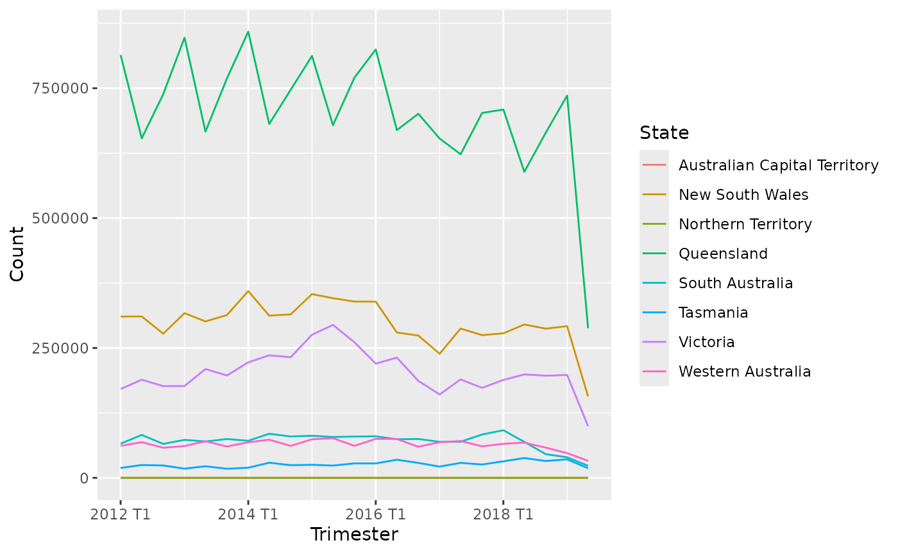

I’ve created the academiadates package to extend
support of the tidyverts ecosystem
handling a specific pattern of dates. The pattern of dates is academic
terms, hence the name. Most institutions that I’m aware of use three
terms per calendar year: spring, summer, and fall.
The tsibble package provides a new data frame class,
the tsibble,
and a handful of classes for various time intervals. Those are covered
on the {tsibble}
home page. This package provides a new class,
yeartrimester, which is suited to handle three terms in a
similar way as yearquarter.
Creation
library(academiadates)
library(tsibble)
library(tsibbledata) # an example dataset
library(dplyr)We have the following dataset from tsibbledata which is monthly data with counts of Australian livestock used for food.
aus_livestock
#> # A tsibble: 29,364 x 4 [1M]
#> # Key: Animal, State [54]
#> Month Animal State Count
#> <mth> <fct> <fct> <dbl>
#> 1 1976 Jul Bulls, bullocks and steers Australian Capital Territory 2300
#> 2 1976 Aug Bulls, bullocks and steers Australian Capital Territory 2100
#> 3 1976 Sep Bulls, bullocks and steers Australian Capital Territory 2100
#> 4 1976 Oct Bulls, bullocks and steers Australian Capital Territory 1900
#> 5 1976 Nov Bulls, bullocks and steers Australian Capital Territory 2100
#> 6 1976 Dec Bulls, bullocks and steers Australian Capital Territory 1800
#> 7 1977 Jan Bulls, bullocks and steers Australian Capital Territory 1800
#> 8 1977 Feb Bulls, bullocks and steers Australian Capital Territory 1900
#> 9 1977 Mar Bulls, bullocks and steers Australian Capital Territory 2700
#> 10 1977 Apr Bulls, bullocks and steers Australian Capital Territory 2300
#> # ℹ 29,354 more rowsNotice how the first month is July. We can set the fiscal or academic year to start the seventh month for the sake of having a whole first year.
As an example we can aggregate this to quarters and trimesters. We
have to convert to a regular tibble to make regrouping the
data under the new time index easier.
# quarters
aus_q <- aus_livestock |>
as_tibble() |>
mutate(Quarter = yearquarter(Month, fiscal_start = 7)) |>
summarize(
Count = sum(Count),
.by = c(Quarter, Animal, State)
) |>
as_tsibble(index = Quarter, key = c(Animal, State))
# trimesters
aus_t <- aus_livestock |>
as_tibble() |>
mutate(Trimester = yeartrimester(Month, academic_start = 7)) |>
summarize(
Count = sum(Count),
.by = c(Trimester, Animal, State)
) |>
as_tsibble(index = Trimester, key = c(Animal, State))
aus_q
#> # A tsibble: 9,788 x 4 [1Q]
#> # Key: Animal, State [54]
#> Quarter Animal State Count
#> <qtr> <fct> <fct> <dbl>
#> 1 1977 Q1 Bulls, bullocks and steers Australian Capital Territory 6500
#> 2 1977 Q2 Bulls, bullocks and steers Australian Capital Territory 5800
#> 3 1977 Q3 Bulls, bullocks and steers Australian Capital Territory 6400
#> 4 1977 Q4 Bulls, bullocks and steers Australian Capital Territory 7700
#> 5 1978 Q1 Bulls, bullocks and steers Australian Capital Territory 7000
#> 6 1978 Q2 Bulls, bullocks and steers Australian Capital Territory 6900
#> 7 1978 Q3 Bulls, bullocks and steers Australian Capital Territory 7800
#> 8 1978 Q4 Bulls, bullocks and steers Australian Capital Territory 8500
#> 9 1979 Q1 Bulls, bullocks and steers Australian Capital Territory 7900
#> 10 1979 Q2 Bulls, bullocks and steers Australian Capital Territory 7900
#> # ℹ 9,778 more rows
aus_t
#> # A tsibble: 7,368 x 4 [1T]
#> # Key: Animal, State [54]
#> Trimester Animal State Count
#> <tri> <fct> <fct> <dbl>
#> 1 1977 T1 Bulls, bullocks and steers Australian Capital Territory 8400
#> 2 1977 T2 Bulls, bullocks and steers Australian Capital Territory 7600
#> 3 1977 T3 Bulls, bullocks and steers Australian Capital Territory 10400
#> 4 1978 T1 Bulls, bullocks and steers Australian Capital Territory 9300
#> 5 1978 T2 Bulls, bullocks and steers Australian Capital Territory 9600
#> 6 1978 T3 Bulls, bullocks and steers Australian Capital Territory 11300
#> 7 1979 T1 Bulls, bullocks and steers Australian Capital Territory 10700
#> 8 1979 T2 Bulls, bullocks and steers Australian Capital Territory 10100
#> 9 1979 T3 Bulls, bullocks and steers Australian Capital Territory 8000
#> 10 1980 T1 Bulls, bullocks and steers Australian Capital Territory 7300
#> # ℹ 7,358 more rowsIf your date is in a format like Fall 2025, you can
covert it to yeartrimester using
seasonal_trimester(). This is set up to work for fall,
spring, and summer terms.
Plotting
The built-in plotting functionality is limited. The plotting
functionality for the tidyverts ecosystem is partly from
the feasts package: Graphics.
Some of those functions depend on the class of the index. This means
that, without porting those functions to accommodate the
yeartrimester class, a portion of the functionality will
not work.
(I hope to do that in the future, but the functionality can be recreated manually for the time being.)
library(ggplot2)
aus_t |>
filter(
Animal == "Bulls, bullocks and steers",
Trimester >= yeartrimester('2012 T1', academic_start = 7)
) |>
ggplot(
aes(
x = Trimester,
y = Count,
color = State
)
) +
geom_line()
There is a bug in tsibble when using
yearquarterwith afiscal_start.yearquarter_transdoes not account for that offset, so thefiscal_startis dropped through transforming to a date and then inverting the transform.I’ve worked around this by adding in the additional months to it when transforming to a date. The re-transformed
yeartrimesterdoes not have an offset, but the offset is built-in.